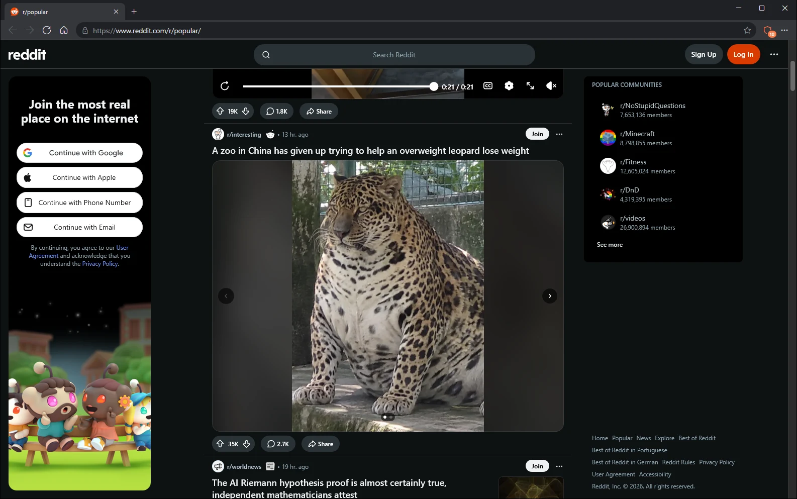
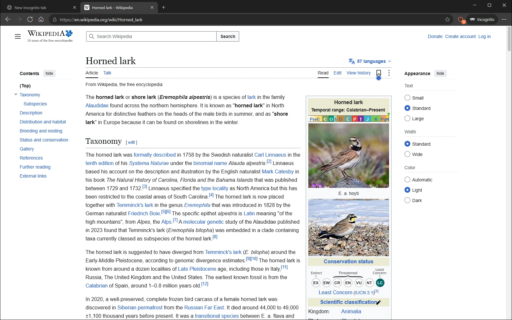

Screenshots






Progress
Snowlark is in active development on Windows. These numbers come from one development machine and move every day.
Speedometer 3.1 in the window (higher is better)
Web Platform Tests by area
The testharness tests of the areas we run (reftests are not counted here).
| Area | Passing | Subtests | Share |
|---|---|---|---|
| URL | 11,002 | 11,006 | 100.0% |
| Encoding | 23,639 | 23,657 | 99.9% |
| Selection API | 34,267 | 34,421 | 99.6% |
| DOM | 62,214 | 63,418 | 98.1% |
| SVG | 13,518 | 13,807 | 97.9% |
| CSS Fonts | 8,448 | 8,662 | 97.5% |
| CSS Backgrounds | 5,984 | 6,236 | 96.0% |
| HTML | 93,136 | 98,322 | 94.7% |
| CSS Selectors | 5,541 | 6,044 | 91.7% |
| Editing | 102,839 | 116,432 | 88.3% |
| Fetch | 6,193 | 7,084 | 87.4% |
| CSS Sizing | 5,537 | 6,347 | 87.2% |
| CSS Grid | 13,625 | 15,841 | 86.0% |
| Shadow DOM | 11,883 | 15,324 | 77.5% |
| CSS Masking | 4,550 | 6,393 | 71.2% |
| CSS Values | 6,111 | 10,349 | 59.0% |
Recent work
- Incognito windows (Ctrl+Shift+N): cookies, site data, history and the downloads list stay in memory, and nothing of theirs is written to the profile.
- A downloads page (
snowlark://downloads, Ctrl+J) with history, search, Show in folder, Copy link and Clear all. progressandmeterstyled withappearance: nonedraw their bar and value, as pages style them.- Faster DOM insertion and removal: inserted and removed subtrees carry a summary of what they hold, and custom element reactions check an element's kind once.
- Restyles of 64 elements or more run in parallel, and
::beforeand::afterare no longer styled when no rule gives them content. - 2D canvas: images drawn with
drawImagestay on the GPU between draws; a page that drew at 2 frames a second now runs at the display's 180.
Native ad blocking
Ad and tracker blocking is built into the browser itself, with no extension to install.
- The same public filter lists uBlock Origin uses by default: EasyList, EasyPrivacy, uBlock Origin's own lists and more, kept up to date automatically.
- Full filter syntax: network requests are blocked before they leave the browser, page elements are hidden with cosmetic filters, and scriptlet filters neutralise ad scripts.
- Your own filters: add custom filters, or subscribe to further lists and hosts files, in the browser's settings.
Architecture
Snowlark keeps the page's document tree in native Rust and makes the step between JavaScript and that tree nearly free, as the major engines do. Rust gives C++-class speed without C++'s memory-safety bugs, which matters because security comes first. It also lets the engine build on proven open-source components.
How a page flows through the engine
| Part | What it does |
|---|---|
| JavaScript | V8, embedded directly. Every JavaScript-visible interface is generated from the specifications' Web IDL, never written by hand, and hot properties take V8's fast path straight into Rust. |
| DOM | One arena of nodes per event loop, with ids that carry a generation, so a stale reference can never reach a reused node. |
| Style | Stylo, Firefox's style system: the cascade, computed values, invalidation and parallel restyling. |
| Layout | Block, inline, table, positioned layout and text are our own; flex and grid use Taffy. Each layout produces an immutable fragment tree, so unchanged parts are reused. |
| Paint and compositing | Display lists drawn with Direct2D on a raster thread per tab, in tiles, composited on the GPU at the display's refresh rate. |
| Network | HTTP/1.1 and HTTP/2 over TLS, cookies, cache, HSTS, Content Security Policy and mixed-content blocking. |
| Process isolation | Each tab's page runs in a renderer process of its own; the browser and its pages talk in plain-data messages. |
| Storage and media | IndexedDB, Web Audio and video, each in its own component. |
Built with
V8 (through Deno's rusty_v8), html5ever, cssparser and selectors from Servo, Stylo and encoding_rs from Firefox, the url crate, Taffy, resvg, and Windows' Direct2D, DirectWrite, DirectComposition and Media Foundation.
Principles
- User security first, then speed on real, script-heavy pages, then style and layout throughput.
- Specifications are the source of truth. Behaviour is implemented from the WHATWG and W3C texts and checked against the Web Platform Tests.
- Every speed claim is measured, before and after, on the same machine, against Chrome.
Use of AI
Snowlark is developed with AI coding assistants, mainly Anthropic's Claude. They write most of the code and do much of the debugging, testing and benchmarking, directed by the project's maintainer. Every change has to pass the same checks whoever wrote it: the unit tests, the Web Platform Tests, and the speed benchmarks. The browser itself has no built-in AI features.
What Snowlark leaves out
- No built-in AI features.
- No cryptocurrency or wallet features.
- No search engine deals. Nobody pays to be the default: DuckDuckGo is preset, and Google, Bing, Brave Search and Startpage are one setting away.